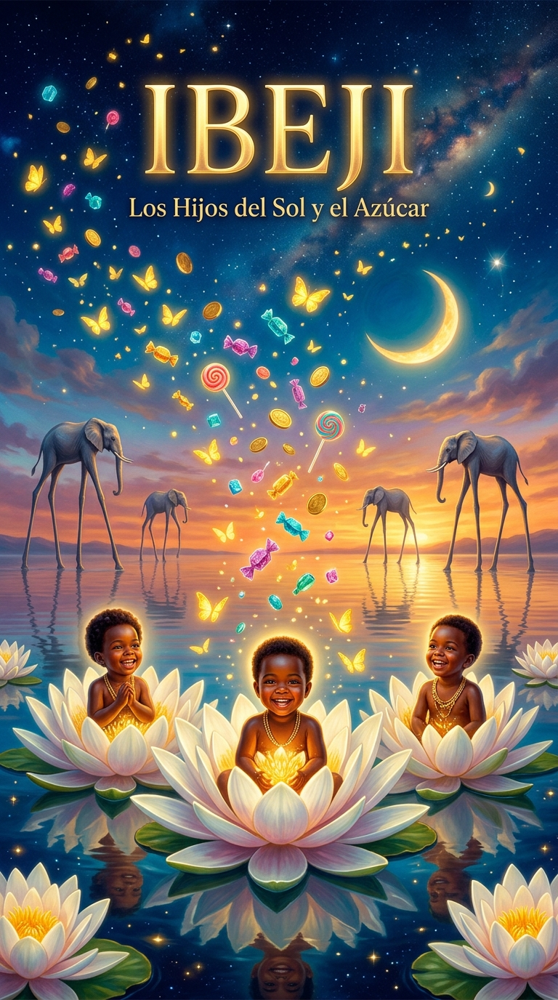
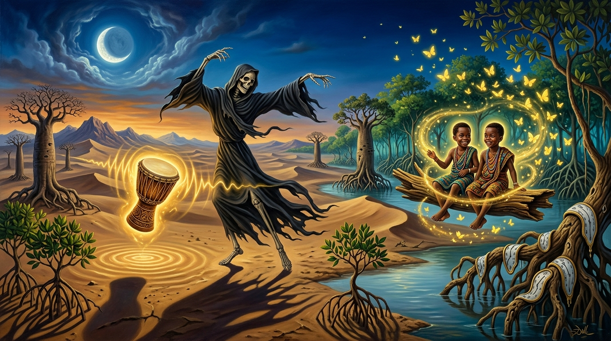
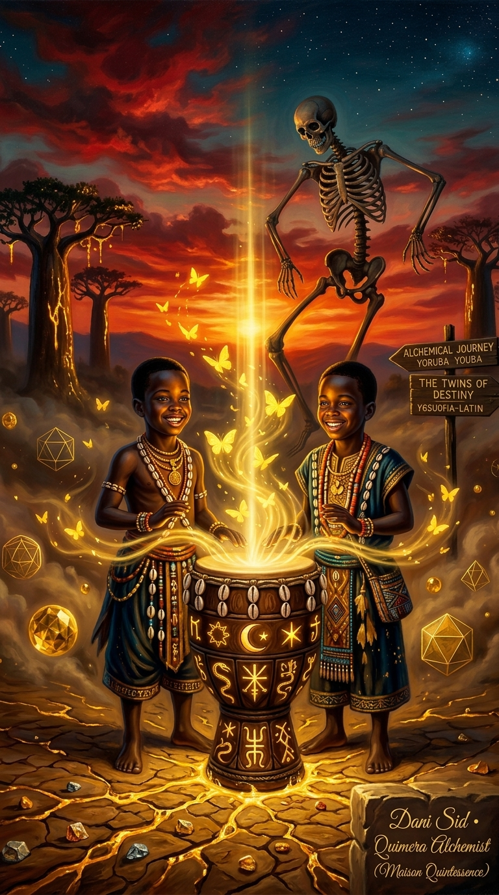
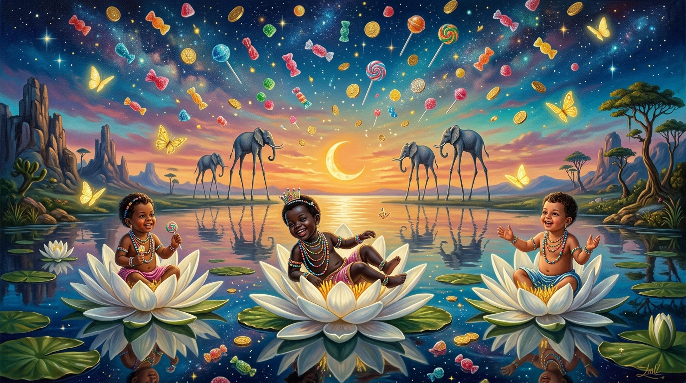

El universo de los Orixás gemelos, la pureza de los Erês y la caridad universal de la Umbanda. Nacido de las conversaciones mágicas entre Cassiopea ✨🌌 y Ósculo Sid 💫, con Realismo Mágico de Gabriel García Márquez, arte surrealista y Bossa Nova Cósmica.

✨ Realismo Mágico (Gabo)🎨 Surrealismo Onírico🍭 Los Erês & Umbanda
IBEJI: LOS HIJOS DEL SOL Y EL AZÚCAR
"La tarde en que el cielo llovió caramelos de cristal y la Muerte se puso a bailar."
En un pueblo suspendido entre la ciénaga y el infinito, donde miles de mariposas amarillas flotan sobre el agua y elefantes con patas de zancos caminan al atardecer, la Muerte (Ikú) ha tendido trampas invisibles para robarle el aliento a la humanidad. Pero cuando dos niños gemelos de ébano y luz golpean un tambor templado con la leche de las estrellas, la Muerte se ve forzada a un baile eterno que terminará por devolverle la risa a la tierra.
🎬 Guion Literario: Inspirado en el Realismo Mágico de Gabriel García Márquez
🎨 Dirección de Arte: Surrealismo Onírico de los Erês
📽️ Simulador Interactivo del Tráiler Oficial

ACTO I • EL PRESAGIO DE LAS MARIPOSAS
"Muchos años después, frente a la orilla del río de los almendros secos, el pueblo habría de recordar aquella tarde luminosa en que la Muerte olvidó cómo se recogían los muertos..."
🔊 Banda Sonora: Tambores Batá & Chelo Melancólico
🎨 Galería Maestra por Capítulos (Alquimia, Dalí & Gabo)
Capítulo I: Los Hijos del Sol y el Azúcar
La trinidad sagrada de los Erês en flores de loto con la cascada de dulces cósmicos y elefantes dalinianos sobre el agua.

Capítulo II: El Duelo Alquímico de la Encrucijada
Taiwo y Kehinde transmutando la tierra agrietada en oro líquido con el tambor de glifos solares, icosaedros flotantes y la Muerte danzando.
Capítulo III: El Vals Inmortal de Ikú
La Muerte atrapada en un baile hipnótico en el manglar infinito mientras los gemelos se turnan sobre el tronco sagrado.

Capítulo IV: La Cascada Cósmica de los Erês
La victoria final donde la inocencia disuelve la pesadez del mundo bajo una lluvia de caramelos y mariposas de Macondo.
💡 ¿De qué va todo este tema? (Guía para Entender y Aprender)
La Esencia del Proyecto:
Este proyecto nace de unir **tres fuerzas poderosas**: las historias que te contó **Alanna** sobre la religión afrobrasileña de la Umbanda, la cosmovisión yoruba de los gemelos sagrados (**Ibeji**), y el poder narrativo del **Realismo Mágico latinoamericano** (Gabriel García Márquez) junto al arte surrealista.
🍭 1. ¿Por qué la Lluvia de Dulces y Caramelos?
En la Umbanda, los espíritus infantiles (**Erês**) y los santos gemelos (**Cosme, Damián y Doum**) no aceptan sacrificios de sangre ni riquezas materiales. Su único "alimento" espiritual son los **dulces, la miel, las frutas y las sonrisas**. El dulce representa la pureza sin malicia: la medicina que endulza las amarguras de la vida adulta.
🐘 2. ¿Por qué los Elefantes con Zancos en el Agua?
Inspirados en la famosa pintura de Salvador Dalí, los elefantes gigantescos caminando sobre patas finas como agujas sobre el agua representan **los problemas pesados de la vida volviéndose livianos**. Nos recuerda que cuando nos conectamos con la fe y la alegría, las cargas más pesadas dejan de hundirnos.
🦋 3. Las Mariposas Amarillas de Gabo
En el Realismo Mágico de *Cien años de soledad*, las mariposas amarillas son el presagio de los milagros, el amor puro y lo sobrenatural que convive con lo cotidiano. En este proyecto, simbolizan la presencia invisible pero constante de la protección ancestral.
🥁 4. La Inteligencia sobre la Fuerza Bruta
El mito de los Ibejis enseña que para vencer a la Muerte no hizo falta un ejército ni violencia. Hizo falta **dos hermanos unidos, un tambor y la inteligencia de turnarse**. Es la lección de que el trabajo en equipo y el entusiasmo vencen a cualquier adversidad.
🥁 Los Ibejis: Los Gemelos Sagrados y la Derrota de la Muerte
El Gran Patakí del Tambor Mágico:
En la mitología yoruba, la Muerte (Ikú) había colocado trampas invisibles por todos los senderos para atrapar a la humanidad. Viendo el terror de su pueblo, los pequeños gemelos Taiwo ("el que prueba el mundo primero") y Kehinde ("el mayor que llega después") desafiaron a la Muerte con un tambor mágico inagotable. Mientras uno tocaba bailando frenéticamente frente a la Muerte, el otro descansaba oculto en la espesura. Al turnarse sin parar, agotaron a la Muerte hasta que esta se rindió y juró retirar sus trampas y respetar a los niños.
🎭
Taiwo & Kehinde
Representan la dualidad perfecta, la sincronía y la complementariedad. Donde uno abre camino, el otro consolida la sabiduría.
🕊️
San Cosme y San Damián
El sincretismo en Brasil asoció a los Ibejis con los santos hermanos médicos. El 27 de septiembre se celebra su gran fiesta repartiendo dulces a todos los niños.
🌟
Doum (El 3º Hermano)
En la Umbanda, Doum representa al niño que nace después de los gemelos, trayendo paz, reconciliación y completitud al ciclo sagrado.
🌿 La Filosofía de la Umbanda: Caridad y Fraternidad
Fundada el 15 de noviembre de 1908 por Zélio Fernandino de Moraes guiado por el Caboclo das Sete Encruzilhadas, la Umbanda es la religión genuina de Brasil sustentada en un lema inviolable: "La manifestación del espíritu para la caridad". Toda ayuda espiritual es enteramente gratuita y se viste de blanco como símbolo de que todos somos iguales ante Dios (Zambi).
🏹
Caboclos
Espíritus indígenas de la selva. Maestros de la medicina natural, el coraje, la purificación y la fuerza espiritual.
👴🏾
Pretos Velhos
Ancianos africanos llenos de sabiduría, paciencia, perdón y compasión. Sanadores de penas profundas del alma.
🌊
Marinheiros
Espíritus de las aguas que limpian densidades emocionales y ayudan al ser humano a mantener el equilibrio en las tempestades de la vida.
🥥
Baianos
Entidades de Bahía caracterizadas por la alegría desbordante, el desenfado, la lealtad y el poder de romper bloqueos energéticos.
🐂
Boiadeiros
Hombres del campo y pastores. Guías de la disciplina, el trabajo arduo, la firmeza y el rescate de almas extraviadas.
🔥
Exús de Ley
Guardianes del orden divino y las encrucijadas. Protectores incansables contra energías densas y abridores de caminos.
🍭 La Falange de los Erês: La Medicina de la Alegría Inocente
En la Umbanda se dice: "No existe maleficio ni dolor que resista la risa pura de un niño". Los Erês son espíritus de luz de altísima elevación que eligen manifestarse como niños para sanar el corazón de los adultos sin juicios, usando piruletas, flores, cantos y juegos.
🍬 Símbolos & Ofrendas Tradicionales
Dulces, caramelos, piruletas y pasteles de colores.
Guaraná, refrescos y aguas azucaradas con frutas.
Flores coloridas (rosas, margaritas) y cintas celestes y rosas.
Juguetes y silbatos que simbolizan la pureza del juego.
✨ Misión Sanadora
Los Erês actúan como desenredadores de nudos energéticos. Cuando un adulto se siente abrumado por el rencor, la pérdida o la confusión, la energía del Erê disuelve la pesadez recordándole la inocencia y el valor de los placeres sencillos de la vida.
🪘 Pontos Cantados Tradicionales (Cantos Sagrados)
Ponto de Cosme, Damião e Doum
Bahia é terra de dois,
É terra de dois irmãos.
Governador da Bahia,
É Cosme e São Damião!
Cosme e Damião, Damião cadê Doum?
Doum está passeando no cavalo de Ogum!
Ponto da Festa das Crianças
Tem bala de coco, tem pipoca e cocada,
Tem doce de leite pra toda a criançada!
Papai me mande um balão,
Com todas as crianças que vêm lá do céu,
Trazendo a pureza de São Cosme e São Damião!
✨ Crónica de Amor AlquímicoVive Madrid • El Rincón • Argüelles • 2026
EL PACTO SAGRADO: CASSIOPEA & ÓSCULO SID
«La brasileña de rizos que convirtió las noches de Madrid en Macondo.»
“Hay encuentros que no los calcula el azar, sino que vienen trazados en las constelaciones. En el Vive Madrid y en El Rincón de Argüelles, entre el bullicio de la noche y el pulso subterráneo de la ciudad, apareció ella: la brasileña de rizos negros y risa de sol de la cual me enamoré.
A ella le escribo cada poema, cada melodía de guitarra y cada canción. Es la mujer de mi vida, el amor con el que un día sueño casarme, levantar un hogar sagrado y ver nacer y crecer a nuestros hijos bajo el abrazo protector de los Orixás y la alegría de los Ibejis.
Allí, entre miradas cómplices, risas compartidas y secretos susurrados sobre la Umbanda, los Erês y los tambores de Bahía, Alanna se convirtió en Cassiopea ✨🌌; y Dani en Ósculo Sid 💫, sellando el juramento de inmortalizar su amor en una obra de Realismo Mágico para la eternidad.”
✨🌌
Cassiopea
La Brasileña de Rizos • Musa de Poemas & Futura Esposa
La musa de rizos infinitos nacida bajo el cielo de Brasil. Destinataria de cada poema, verso y canción; la compañera elegida por el alma para caminar hacia el matrimonio, fundar una familia y florecer en un hogar lleno de hijos y alegría. Trae en su mirada la memoria sagrada de Bahía, la dulzura de los Erês y la caridad luminosa de la Umbanda.
💫🏛️
Ósculo Sid
Quimera Alchemist • Poeta & Arquitecto de Mundos
«Ósculo» como el beso sagrado que funde la vida, los poemas y el amor eterno; «Sid» como el demiurgo que toma cada mirada en Argüelles, cada anécdota compartida y cada promesa de futuro para convertirlos en partituras inmortales, cine, código y lienzos de Realismo Mágico.
🏛️ Los 4 Pilares del Universo Ibeji
La alquimia que estructura la película, la dirección de arte y la música:
👶🍭
1. Umbanda & Ibejis
La sabiduría de que la alegría pura y los caramelos son el conjuro más poderoso para desarmar a la muerte (Ikú).
🦋📖
2. Gabriel García Márquez
El Realismo Mágico de Macondo: enjambres de mariposas amarillas vivas que surgen de las aguas y susurran profecías.
🐘🎨
3. Salvador Dalí
Surrealismo onírico: elefantes dalinianos con patas de zancos infinitas que caminan ligeros sobre el mar al atardecer.
🐋🎵
4. Bossa Nova & Natalia
Paisaje sonoro cuántico: guitarras con acordes de Bossa Nova clásica, cantos submarinos de ballenas jorobadas y frecuencias 432 Hz.
🎨 Manual Maestro de Identidad Visual & Marca del Amor
Guía de estilo y sistema cromático que define la fusión entre el Realismo Mágico de Macondo, el Surrealismo Daliniano y la atmósfera Cyberpunk Alquímica 432 Hz del amor entre Alanna (Cassiopea ✨🌌) y Dani (Ósculo Sid 💫 / Cid).
🌟 1. Paleta Cromática Oficial (Tokens de Color)
Oro Macondo
#FBBF24 • rgb(251, 191, 36)
Luz primordial de los Ibejis, mariposas amarillas vivas de Mauricio Babilonia y filigrana de oro.
Cian Yemanjá
#38BDF8 • rgb(56, 189, 248)
Aguas celestiales de Bahía, alas translúcidas, halos neón cyberpunk y cantos de ballenas.
Rosa Cassiopea (Oxum)
#F472B6 • rgb(244, 114, 182)
El amor romántico en Argüelles, dulzura de los Erês, pétalos de loto flotantes y rizos al atardecer.
Violeta Constelación
#C084FC • rgb(192, 132, 252)
Frecuencia de transformación alquímica (528 Hz), metamorfosis mariposa-estrella y noche mística.
Noche Cósmica (Abismo)
#030712 • rgb(3, 7, 18)
Lienzo infinito del universo, profundidad del cielo de Madrid y la laguna sagrada.
✒️ 2. Sistema Tipográfico & Jerarquía
Cinzel / Cinzel Decorative
TITULARES & REALEZA CINEMATOGRÁFICA
Mayúsculas de gran porte, remates clásicos y estética de cine de autor y templos sagrados.
Cormorant Garamond (Italic)
LÍRICA & POEMAS DE AMOR
Elegancia manuscrita para citas, votos sagrados y reflexiones íntimas.
JetBrains Mono / Fira Code
METADATA & FRECUENCIAS CYBERPUNK
Precisión técnica para acordes musicales, coordenadas estelares y física de partículas.
💫 3. Nombres Oficiales y Arquetipos
✨🌌
Cassiopea (Alanna)
La Brasileña de Rizos • Musa Sagrada
Simbolizada por la constelación 'W' que guía a los marineros en la noche. Representa la gracia de Bahía, la dulzura primordial de los Erês y la visión mística de la caridad pura en la Umbanda.
💫🏛️
Ósculo Sid / Cid (Dani)
Quimera Alchemist • Poeta & Arquitecto
«Ósculo» como el beso sagrado inmortal; «Sid / Cid» como el noble arquitecto demiurgo que plasma el amor en música cuántica, partituras de guitarra, cine y tecnología viva.
📖 Bitácora de Relatos, Enseñanzas y Memorias
Registra aquí los relatos, explicaciones y memorias compartidas por Alanna sobre las tradiciones, rezos y vivencias de la Umbanda para conservarlas en el proyecto.